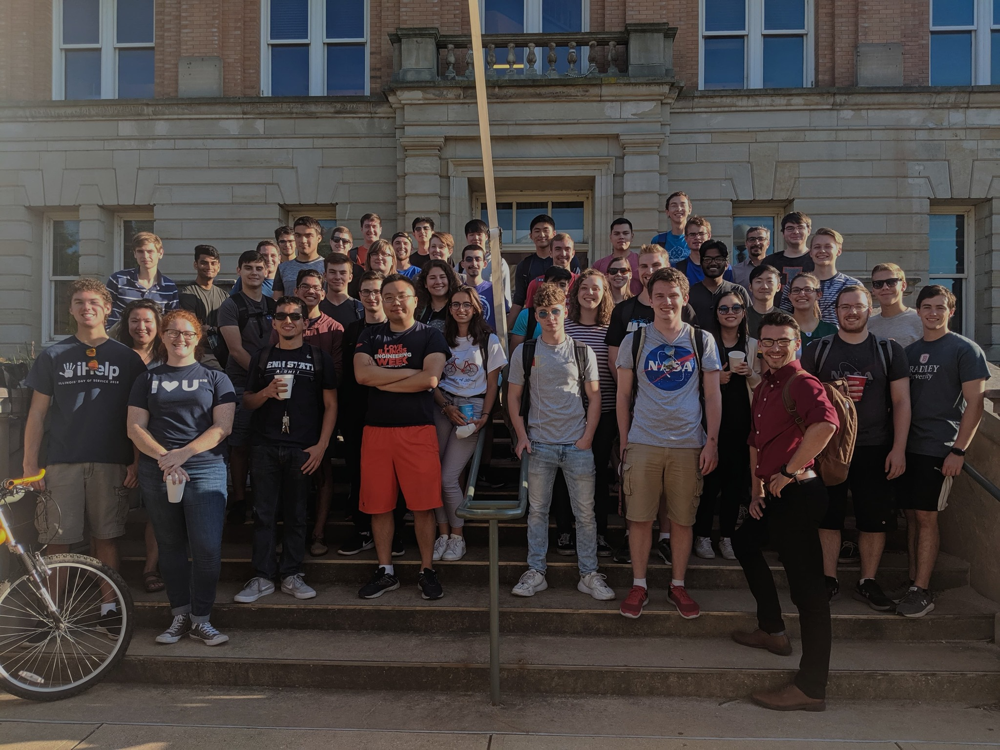

About ANS
ANS has made, and continues to make, important contributions to the use of nuclear science and technology, and consequently to the larger society beyond ANS. It achieves this through its many products and services, including meetings, publications, standards, outreach, honors and awards, scholarships, teachers workshops, Organization Members, and representation in Washington, D.C.
ANS continues to be a professional organization of scientists, engineers, and other professionals devoted to the peaceful applications of nuclear science and technology. Its 11,000 members, from over 40 countries, come from diverse technical disciplines ranging from physics and nuclear safety to operations and power, and from across the full spectrum of the national and international enterprise, including government, academia, research laboratories, and private industry. Making it all succeed are a Board of Directors, 20 standing committees, 19 professional divisions, one technical group and two working groups, 32 local sections, over 35 student sections, liaison agreements with over 30 non-U.S. nuclear societies, and a headquarters staff of about 50 people.
To learn more about the histroy of the organization, and the work that it does, check out
http://www.ans.org/about/history/Not a Member? Join ANS!
If you are interested in taking advantage of the member rate, join ANS as a National Member at https://secure.ans.org/join/ Once you complete the member application, you can immediately register at the lower member fee. You must be an ANS National Member before you can register at the member rate. Questions regarding member benefits can be directed to members@ans.org or call Membership at 800-323-3044.
For any Visa Letter requests, contact registrar@ans.org with your information.
